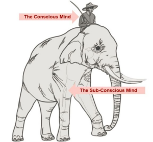
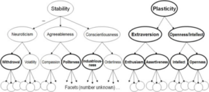

Summary
The author, Graham Duncan, emphasizes that the most crucial skill in building effective teams and making sound professional (and personal) decisions is the ability to clearly understand people, encapsulated by the question \“What’s going on here, with this human?\” He argues that this skill, refined over thousands of assessments, is paramount in today’s complex environments. The essay breaks down this ability into three core components: seeing one’s own biases and influence (\“reflection in the window\”), discerning a person’s unconscious drives and true behaviors over stated intentions (\“elephants in the room\”), and recognizing the profound impact of context and environment on individual performance (\“the water\”). Duncan asserts that in-person reference checks are significantly more valuable than interviews for gaining this clarity. He also shares his experiences with various personality assessment tools and provides practical interview and reference questions, aiming to help others make more accurate and insightful judgments about potential hires, partners, or even themselves.
Key Points
- Core Skill: The most critical skill for team building and decision-making is understanding \“what’s going on here, with this human?\” (candidate selection, business partners, etc.).
- Three Pillars of Clear Seeing:
- Seeing your Reflection in the Window: Self-awareness and understanding one’s own biases and impact on interactions. Personality assessments (Myers-Briggs, Big Five) can aid this.
- Seeing the Elephants in the Room: Recognizing a person’s unconscious drives and actual behaviors (\“theory in use\”) over espoused theories. Reference checks are 5-10x more valuable than interviews for this.
- Seeing the Water: Understanding the context/ecosystem; a person’s performance is highly dependent on their environment, and strengths in one context can be weaknesses in another.
- Value of References: References are paramount for gaining clear insight, often revealing information unobtainable in interviews. Seek \“Yoda references\” (unbiased, calibrated, clear-eyed).
- Interview Mindset: Approach interviews with humility and \“negative capability\” (willingness to delay knowing), aiming to find the best fit for the candidate, not just a binary \“A player\” judgment.
- Key Attributes: Look for resourcefulness, and for team players, \“humble, hungry, and smart\” (as defined by Lencioni).
- Personality Assessments: Various tools like Big Five/OCEAN, ghSMART, and Kegan’s adult development stages can provide useful frameworks for understanding people, but no single framework is perfect.
- Practical Advice: Includes specific questions for both reference checks and interviews designed to elicit deeper insights into a person’s character and capabilities.
https://grahamduncan.blog/whats-going-on-here/
Original Content
The philosopher Kwame Appiah writes that “in life, the challenge is not so much to figure out how best to play the game; the challenge is to figure out what game you’re playing.”
When I try to figure out what game I’m playing, I see that for the last 25 years I have been playing a game of strategy applied to people, a game where over and over I try to answer the question “what’s going on here, with this human?” In this essay, I make recommendations about candidate selection based on thousands of assessments I have made and my somewhat obsessive interest in the topic.
My goal in this essay is to help others make better decisions on a potential hire, business partner, or even life partner as quickly and as accurately as possible. It’s made up of suggested action steps and some of the ruminations that underlie them. At the end I include my own assessment of different personality assessments and some of my go-to interview and reference questions.
Jerry Seinfeld once said, when asked how he felt about aging, “I think if you’re a little lucky in life you should enjoy getting older…when you’re young you can’t see what’s going on so well. You get older, you walk into a room and you see who people are faster.”
Toward the end of his life, Steve Jobs told Walter Isaacson, “If I had a spiritual partner at Apple, it’s Jony Ive. Jony and I think up most of the products together and then pull others in…he gets the big picture as well as the most infinitesimal details about each product.” Let’s say that the way Jobs and Ive knew each other—quirks, strengths, weaknesses—after 14 years of daily conversation was a 10.
How close to that 10 can you get when you’re first getting to know someone and deciding whether they are a fit for your team?
When I started making those sorts of judgments about people, I’d guess my average was a 3. I’ve since done thousands of interviews, spent just as many hours talking to references, and helped hire hundreds of people—as consultants for a research firm that I helped run right after college, and since then as analysts and investors in my role investing large pools of capital. Now, when I’m in the zone and the conditions are right, I think I can sometimes get to a 7.
A lot of people, in my industry and others, see all of this as a drag, a distraction from the central mission of their team. But I’ve come to consider it the most important skill for anyone building teams—and to believe that, to the extent I have any unique skill, this is it. In the work context, managing the complexity around people is the most important skill for anyone building a business. As the gaming company Valve puts it: “Hiring well is the most important thing in the universe.”
This view of hiring as a key business skill is new. It was not true of industrial companies (U.S. Steel, Dow Chemicals), but complex intellectual endeavors like SpaceX are on a new playing field. Or consider the U.S. Army of WWII versus the Navy SEALs of today: the battlefield is even more complex, so selecting for the most talented players gives an organization even more leverage than in the past.
After reading a large number of business school case studies, a friend of UCLA business strategy professor Richard Rumelt observed to him that “‘it looks to me as if there is really only one question you’re asking in each case: What’s going on here?’” Rumelt writes: “it was something I’ve never heard said explicitly but it was instantly and obviously correct. A great deal of strategy work is trying to figure out what is going on. Not just deciding what to do, but the more fundamental problem of comprehending the situation.”
It can be useful, when interviewing someone, to take Rumelt’s cue and ask explicitly: what’s going on here with this person in front of me? The more I’ve done it, the more I realize that what most people think of as the hard parts of hiring—asking just the right question that catches the candidate off guard, defining the role correctly, assessing the person’s skills—are less important than a more basic task: how do you see someone, including yourself, clearly?
Seeing people clearly—or at least more clearly—matters not just when finding the “best” hire, but in identifying the best role for them. Even looking at those of us who are lucky enough to have a high degree of choice about what we do with our work, I’ll bet that as few as 20% of us are in the seat that best optimizes our talents and skills at any given time—the seat that makes us feel at home in the world. That’s not good for the 80%, and it’s not good for their teams either.
The poet David Whyte describes the unfolding of life and career as a “conversation with reality”:
Whatever a human being desires for themselves will not come about exactly as they first imagined it or first laid it out in their minds…what always happens is the meeting between what you desire from your world and what the world desires of you. It’s this frontier where you overhear yourself and you overhear the world.
And that frontier is the only place where things are real…in which you just try to keep an integrity and groundedness while keeping your eyes and your voice dedicated toward the horizon that you’re going to, or the horizon in another person you’re meeting.
Whyte captures how hiring can be an art form. When you see people clearly, you see the transcript of their conversation with reality up until that moment of your meeting, and you glimpse the horizon that stretches out ahead of them. And then sometimes you can help them overhear themselves and overhear what the world wants from them, whether or not that includes working in the role that you had initially imagined for them.
There are three parts to expanding your ability to see people more clearly: seeing your own reflection in the window, seeing the elephants in the room, and seeing the water.
Part I: Seeing your Reflection in the Window
In his book Waking Up, Sam Harris offers a great metaphor for seeing through frames:
Imagine that you want to show another person how a window can also function like a mirror. As it happens, your friend has never seen this effect and is quite skeptical of your claims. You direct her attention to the largest window in your house, and although the conditions are perfect for seeing her reflection, she immediately becomes captivated by the world outside. What a beautiful view! Who are your neighbors? Is that a redwood or a Douglas fir? You begin to speak about there being two views and about the fact that your friend’s reflection stands before her even now, but she notices only that the neighbor’s dog has slipped out the front door and is now dashing down the sidewalk. In every moment, it is clear to you that your friend is staring directly through the image of her face without seeing it.
How do you convey that there’s an aspect of the window that is also a mirror? As Harris says, it’s actually really hard.
But you really can’t see another person clearly unless you can first see yourself clearly: both of you are together creating the interaction you are in. If you’re holding your breath while you speak, you may cause the other person to hold their breath and then you might experience them as nervous. If your question implies a value you place in competitiveness, that part of them may come forward in the answer in a way that would not in other settings.
If I picture my thirty-year-old self doing an interview, I see him as the friend looking through the window: not seeing the way his mind was constantly making snap judgments about the candidate, creating stories with the slightest bit of material, “I like this,” “I don’t like that.” He would project his reality onto the reality of the other person, missing that, for instance, often even very senior people are not their usual selves in a formal interview setting, that there’s a power dynamic that he should not take lightly. He would not yet be aware that while his sensitivity to being hustled is a gift, it also creates a blind spot that causes him to mistakenly pass on a particularly good sales person or someone who is earlier in their career and still relies on jargon or cliché.
One way that I’ve tried to help myself see the reflections in the window is by using personality assessments. I’ve taken well over thirty different personality assessments over the years to try to glimpse my own strengths and weaknesses and to try to see other people more clearly.
Like many people, my first experience was with Myers–Briggs—I tend to test as an INTP—but I I’ve used everything from the “Big Five” or OCEAN (Open-minded, Conscientious, Extroverted, Agreeable, Neurotic), to ghSMART questions (“when I call your former manager, how will they rate your performance on a scale of 1-100?”), to former Bain consultant Patrick Lencioni’s idea of “humble, hungry and smart” as the attributes of an ideal team player. There are also more philosophical systems, such as Bob Kegan’s framework of adult development, and the Enneagram, that require more up-front time investment. (At the bottom of this piece I discuss my experience with different assessment tools.) I recommend using more than one, to avoid becoming stuck seeing through just one framework.
Part II: Seeing the Elephants in the Room
Seeing others clearly is about tuning into a process, a way of seeing. The psychologist Jonathan Haidt’s metaphor is good. Visualize yourself riding a huge elephant while you interview someone riding a second huge elephant (Haidt apparently came to this metaphor of rider and elephant during a psychedelic trip.) Haidt advises imagining your conscious mind as the rider and your unconscious drives as the elephant—powerful and willful and ultimately inclined to take the rider where the elephant wants to go most of the time. The key insight is that the rider is not always a reliable witness about the elephant they ride.

So let’s reframe the interview process: there are two elephants in the room, yours and that of the person you’re trying to see. The bad news is that you’re mostly blind to both elephants. The good news is that there are a lot of other riders who’ve traveled alongside the other rider and elephant. If you take your perspective on the rider and your glimpses of his or her elephant, and add everyone else’s experience of the rider and their elephant, and then control a bit for your own elephant and the references’ own elephants, you can get a good sense of how the candidate’s rider-elephant combination behaves.
There is a difference between what Chris Argyris called “espoused theory” (what someone says when they are interviewed) versus their “theory in use” (the mental models that actually drive their actions in daily life). Note that Argyris was not making the obvious distinction between someone’s theory and action, but instead the distinction between espoused theory and actual theory in use. Interviewing the rider is useful, but you have to keep in mind that in the warp and woof of day-to-day reality, the various “espoused theories” from the rider more often give way to the “theories in use” of the elephant.
Questions like “what are you compulsive about?” can sometimes reveal the other person’s elephant. Or: “Where have you experienced a moment of ignition, when you saw some older person doing an activity and you intuited that they were wired the same way you were, and you said to yourself ‘I want to be that’?” Or: “How would your spouse/sibling/parent describe you with ten adjectives?” If the candidate is capable of taking someone else’s perspective and willing to convey it (which happens roughly 50% of the time, more often in older candidates), then the adjectives tend to help you see both rider and elephant.
During interviews, I try to create a stillness that helps separate signal from noise, elephants from riders. The easiest way to create conditions of stillness is to talk very little. It also helps to have the candidate you’re trying to see clearly ask you questions. Questions have very high signal value compared to most anything else you can get from a candidate. This is harder to do in practice than you might think—you need to make the candidate feel safe enough to ask their true questions, and you need to answer concisely or you’ll run out of time (which is particularly hard if the person asks good questions). I write down each question and sometimes respond with “I’ll answer, but first I’m curious, why did you ask that?” I’m looking for the felt sense of a “hungry mind” based on the way their questions flow. That’s very hard to fake.
Try to unburden the interview of too many assumptions you have about the role. I like asking up-front, “So what criteria would you use if you were the one hiring someone for this role?” I love this question because of how unexpected the answers are. Some are tactical when you expect abstraction. Some improve your own criteria. Some use jargon that may indicate they are playing someone else’s game versus authoring their own. All are quite revealing.
While you may be able to catch glimpses of the elephant in your meeting, it’s important to remember that you’re basically blind. Most of the time, it will be more effective and efficient to speak to other people who know how that elephant and rider go together—their shared “theory in use”—and who have experienced the combination in action, ideally over a large number of iterations over a long time (the way their spouse or sibling knows them).
An in-person interview is only one input, and not necessarily the most valuable one. Relying on my own impression of people has at times worked out okay, but I’ve found that maintaining humility about one’s own ability to see someone clearly during a one- or two-hour interview in a contrived setting is harder than I thought at first.
Before an interview, I sometimes re-read this great passage from Philip Roth’s American Pastoral:
You might as well have the brain of a tank. You get them wrong before you meet them, while you’re anticipating meeting them; you get them wrong while you’re with them; and then you go home to tell somebody else about the meeting and you get them all wrong again. Since the same generally goes for them with you, the whole thing is really a dazzling illusion empty of all perception, an astonishing farce of misperception.
I now consider in-person references with someone who knows the candidate well 5x more valuable than an interview. They can be 10x more valuable when you are already in a high-trust relationship with the reference-giver, and the reference-giver is in a position to see the candidate clearly, with no agendas and few blind spots of their own.
Given the importance of references, the highest purpose of your own interview with a candidate might be to improve your ability to conduct reference interviews, where you hold your own view as just one in a collection of views. This requires an ability to hold multiple perspectives at once, a state of partial knowing that the poet John Keats called “ negative capability ”—in one author’s definition, “the innocence from agendas that enables one to become like what one observes rather than impose the self upon it, the patient and lingering curiosity, the willingness to wait and delay knowing, that allows a person to reach into the different reality than his or her own.” This is difficult to do because your own impressions from the interview are so vivid and multi-sensory, and everyone else’s views are mainly conveyed through language.
In my experience, holding your own perspective alongside those of references should feel slightly uncomfortable and disorienting, or you’re doing it wrong. You should find the candidate confusing at times. If you first see their dysfunction, you should know you have yet to find their genius, and vice versa.
I try to conduct references with an eye to quirky forms of excellence. When I’m on the receiving end of reference calls, I notice that the caller is often subtly framing the exercise with a mildly suspicious “gotcha” vibe (“so why did George leave after only two years?”). I don’t find that particularly effective; it tends to make me shut down as a reference giver. Instead, when I’m calling someone, I try to imagine myself as head of people operations for the entire hedge fund or private equity ecosystem, that I’m agnostic as to where they should sit and just trying to help them get to the best spot. That mindset seems to allow me to size up people more generously and accurately, and to accommodate more quirkiness.
As your sample size of references goes up, you can begin to calibrate on the credibility of the reference giver (what’s their sample size? What are their biases?) as well as to tune into what a “table-pounding” reference sounds like. Fourteen years later I still remember a reference I did for our CFO hire: the woman who had worked with him had a tone of “why are you wasting your time talking to me and not spending your time trying to convince him to join you?” She felt slightly sorry for me that I didn’t get it yet. I’ve listened for that tone ever since on other references, and in the rare moments I hear it, it’s always proven to be high signal.
The hardest part is understanding the dog that doesn’t bark. If you don’t hear that table pounding from someone who knows the reference well, is it contextual in some way (the person is tired, you caught them right after a tough conversation, they are jealous, etc.) or is there signal there? It’s one element of the process that requires the 10,000 hours of practice to get calibrated.
I also try to stick to the default assumption that “everyone is an A player at something.” It’s a more effective and more dynamic way to approach an interview—a live, fascinating puzzle to discover what the elephant and the rider do well—rather than going in with the purpose of determining whether someone is an A player in a binary, Manichean way. I prefer to imagine that I’m trying to find the candidate the best possible job for them; it may be the job I had in mind, or something else altogether.
Part III: Seeing the Water
In 2005, David Foster Wallace delivered what has become a famous commencement speech at Kenyon College. He started it with a joke about two young fish who are swimming along and encounter an older, wiser fish. “Hey boys, how’s the water?” the older fish asks. The junior fish don’t reply, but a minute later one turns to the other and asks, “What the heck is water?”
It’s really hard to see the water in your own local ecosystem, and only slightly easier to see the water in someone else’s. Context matters. I used to assume I could identify a core set of attributes that would work across ecosystems. But although people are wired in certain ways that make them consistent across contexts, they are in other ways extremely sensitive to context.
I sometimes visualize meeting one person as the equivalent of meeting the Ocean’s 11 crew together at once, wrapped up in one human envelope—we each have distinct parts, and we tell a story to ourselves and the world that they are a coherent whole, but depending on the context different parts step forward into the light on the stage. (To read more on “parts” theory, see Internal Family Systems.)
I now believe that there is no such thing as an A player in the abstract, across all time, in whatever ecosystem they end up in. The former head of recruiting at Bridgewater, Jeff Hunter, has a great essay in which he points out that former head of Apple stores Ron Johnson was an “A player” by any definition in Steve World (he was on the short list to succeed Jobs), but became a “C player” after Bill Ackman and his partners made Johnson head of JCPenney (where he was summarily fired after a poor performance).
When you’re taking someone from one ecosystem to another, changing their context, you have to try to see the water in both. It’s disruptive and risky to take someone out of the setting in which they’re thriving, since there are a lot of subtle things going on in the original that may not be immediately obvious. How much of their success depends on the water in the first ecosystem? Was there someone there who believed in them that set a positive feedback loop in motion that may not persist across systems? Try to understand as much as possible about “what’s going on here” in the candidate’s prior ecosystem. For instance in the investment management context, often a portfolio manager will run a large idea by their boss and subtle reactions (a raised eyebrow, a long pause) will cause them to actually size the position smaller. That constant tension is constructive, and if you take the portfolio manager out of that container they will not perform in the same way in the absence of the tension.
This particularly applies to people who leave to start their own companies—in part because they may have a hard time recreating the culture and context that allowed them to thrive when they worked in a structure designed by someone else. (I discussed this transition in my Letter to a friend who may start a new investment platform.)
It’s even possible that strengths in one context become weaknesses in another. The Enneagram personality system stresses that each “type,” a term to describe one of nine ego patterns, has a gift, but tends to get into trouble when it leans too much into this gift. Take someone who is super motivated and who loves to win, but because of this competitiveness doesn’t give as much as they get from peers. In one ecosystem they develop a reputation as a talented “taker” that people are wary of, while in another they are celebrated without reservation.
One marker that I’m seeing someone clearly is when I understand how their strengths are also their weaknesses, how their genius lives right next to their dysfunction. I know that I’m further away from clarity when I am overly excited or overly skeptical.
Different ecosystems have different aesthetics, and you want to tune in to someone’s prior aesthetic context if you plan to change it. A subtle but important element of context is whether the members of a team believe in each other. I’ve been in contexts where my boss believed in me, and contexts where they didn’t. I performed well in the former, badly in the latter. If you’re the player, try to hold out for the coach who appears capable of believing in you. You can often intuit that based on how the current team talks about that manager; former team members are likely even higher signal. And if you’re the manager, try to only hire people you can genuinely imagine believing in, where you can perceive their particular flame of genius and stoke it.
One of the greatest gifts we have for each other, for our children and spouses, for our teammates, is the positive feedback loop we can put someone into purely by believing in them, by seeing their genius and their dysfunction clearly and then helping them construct conditions for the former to flourish.
ASSESSING THE ASSESSMENTS
Myers–Briggs
Like many people, my first exposure to personality assessments was Myers–Briggs, a tool that friends who worked at McKinsey were obsessed with as they tried to understand why some people work well together on teams and some don’t click. Supposedly around 80% of McKinsey’s staff are one profile, ENTJ, and Myers–Briggs gives everyone a framework for understanding why other patterns are trickier to manage.
I tend to test as an “ INTP.” Everyone now understands the usefulness of introversion versus extroversion. The difference between the “P” (extreme comfort with uncertainty) vs. colleagues and romantic partners who are “J” (a tendency to nail things down, to be decisive and minimize uncertainty) has also been useful at times. When I interview people I also sometimes notice the “S” (sensing) tendency to be super literal and concrete, in good and bad ways, versus the more abstract “N” (intuition). I think it’s particularly useful to track S vs. N between yourself and someone you work for or who works for you, because communication difficulties may boil down to that dimension, and it’s useful to have a vocabulary for the tension.
High vs Low Self-Monitors
A second assessment tool came from a friend who worked at McKinsey. She got my attention when she said the only thing she’d learned at Harvard Business School was the distinction between high self-monitors—people who adjust to their audience, and are thus high flexibility, lower integrity—and low self-monitors—people who in good and bad ways don’t adjust to their audience and are thus high integrity, lower flexibility.
I’m a high self-monitor, and I started noticing that many couples consist of a high self-monitor and a low self-monitor. Two high self-monitors can find themselves constantly adjusting to each other, and it’s exhausting. Two low self-monitors are slightly hard to seat next to each other at a dinner party; they need a guide for the social world, and often implicitly require the other person to come to them a bit.
Big Five or OCEAN
When I started East Rock 15 years ago, my mission was to find and invest with the most talented investors in the world. I got a piece of advice from a psychology professor who said that I should check out the “Big Five” or OCEAN (Open-minded, Conscientious, Extroverted, Agreeable, Neurotic) Big Five aspect scale. I got distracted and found my way back to the Big Five over 4,000 interviews later; I found it a revelation to help explain the patterns I had soaked up along the way. In retrospect, maybe I needed the large sample size to be able to see how useful the Big Five actually is in describing the nuance of how people behave in real life.
Each personality system has an origin story, and the Big Five’s is particularly credible. Two professors took every word in the English language that could be used to describe someone, put them into categories, and reduced them to as small a set of factors as they could. For instance, if lots of people agreed they could call someone both gregarious and outgoing, the researchers decided that was the same thing; they kept reducing that down until they got extraversion as a primary factor.
For high open-minded picture Leonardo Da Vinci
For high conscientious picture Robo-cop
For high extraverted picture Bill Clinton and high introverted picture Barack Obama
For low neuroticism picture the Dude from the Big Lebowski or the stereotypical Californian
For high neuroticism picture Woody Allen
Researchers later identified that the Big Five could be reduced to the “big two,” stability and plasticity. Or double click on the big Five and you have the “big ten.” Here’s a great overview of the facets:

There are thousands of studies using the Big Five. Within psychology it’s the equivalent of gravity, and at this point nearly everyone in academia finds it a useful mental model for personality. Sam Barondes’ book Making Sense of People is a great introduction to the Big Five. I tracked down Sam and asked him about the book’s raison d’être. He told me that he wrote it because he knew the Big Five was solid as science but had noticed that, in his own hiring in the medical department at UCSF as well as among the fancy tech CEOs he counseled, no one was actually using it in practice.
ghSMART
Ten years ago, I read Geoff Smart’s book Who and then hired one of his partners at their assessment firm ghSMART to “Smart” me (a four-hour structured interview) so that I could be on the receiving end of the process and understand it better. Then I had lunch with Geoff, and he somehow managed to grok me within five minutes, hypnotizing me into answering a rapid series of questions with a very upbeat attitude and smile.
Signature ghSMART questions include the aggressive and efficient question of “what are the names of your last five bosses (stop and write each name down) and when I call them for a reference on you, how would they each rate you on a 1-100 for overall performance?” Interviewers go through each year or phase of your life and capture high points and low points. It sounds easy; it’s not, which is why I assume ghSMART shares all their IP surprisingly freely. If you’re a board member or private equity investor who is hiring someone that is senior and expensive, so the stakes are high and you’re in a hurry, my view is that it’s smart to pay for the services of ghSMART.
Pulling the Geoff Smart thread also led me to his father, Brad Smart, who had run a lot of hiring for GE under Jack Welch. Brad’s book Topgrading inspires much of Geoff’s work. In this short blog piece, Brad argues that “resourcefulness” is the meta competency:
Resourcefulness is the single most important competency, so here’s my advice: look for evidence of Resourcefulness 100% of the time as you evaluate candidates. Imagine that you have special magical glasses that register through the lens whether the candidate is, at this moment, revealing Resourcefulness and maybe then it flashes green, or lack of Resourcefulness and maybe then it flashes red. I’m making the point that Resourcefulness is not a competency you first think of after the interview while you’re reviewing your notes. You must constantly ask yourself, “Does that example, what I’m seeing, what I’m feeling, what I’m hearing, show Resourcefulness, or lack of it?”
I sometimes imagine I’ve dropped the candidate I’m interviewing on a desert island and I come back five years later. Some people I’d worry about, some people I wouldn’t. The Y Combinator application question “what’s a system or game you’ve hacked in the last year?” is a good arrow in the quiver when exploring the resourcefulness dimension.
“Humble, hungry and smart”
Another framework I use specifically in the context of hiring for a well-functioning team is former Bain consultant Patrick Lencioni’s idea of “humble, hungry and smart” as the core virtues of the “ideal team player.” Lencioni defines “smart” as “smart about people,” and he notes that if you sacrifice any of these essential three virtues, you are introducing friction into your team. I find his framework quite useful for understanding trade-offs around team dynamics. The book The Ideal Team Player is a great quick read, or you can watch this TED talk or listen to this podcast.
Three other frameworks that are often used in a corporate context are Caliper,Insights Discovery, and Workplace Dimensions. Many hedge funds use Caliper as a personality test for hiring (it also has an IQ component) and end up finding it useful. Vista Private Equity has a strategy of buying software businesses and then firing the more expensive, senior software sales people and hiring younger, cheaper ones using Insights Discovery’s ability to successfully identify good sales people (Insights Discovery is based on Jungian archetypes). Ray Dalio and his team at Bridgewater swear by Workplace Dimensions as a way to make sure each small team is balanced and effective across four dimensions: Creator, Refiner, Executer, Advancer.
I suspect that each of these systems captures roughly 80% of the reality about people, and the important step for teams is to pick one, invest the time in making the vocabulary resonate, and then use it to discuss communication in the team and make hires.
Bob Kegan and the Enneagram
There are two more philosophical systems—Bob Kegan’s adult development scale and the Enneagram—that I frequently try to apply, but they both require big time investments up front in attending workshops and soaking up the vocabulary, so just reading about them can be off-putting and not super useful. I’ll mention both briefly in case people want to investigate further.
In 2011, I took a workshop at the Harvard School of Education to learn how to assess people’s stage of development using Kegan’s Subject Object Interview. Kegan argues that there are five distinct stages of adult development; the last three are the “socialized” stage (around 60% adults are in this stage), the “self-authoring” stage (roughly 30% of American adults), and finally the self-transforming stage (less than 1% of adults). He writes:
Having a socialized mind dramatically influences the sending and receiving of information at work. If this is the level of mental complexity through which I view the world, then what I send will be strongly influenced by what I believe others want to hear.
Contrast this with the self-authoring mind. If I view the world from this level of mental complexity, what I “send” is more likely to be a function of what I deem others need to hear to best further the agenda or mission of my design. Consciously or unconsciously, I have a direction, an agenda, a stance, a strategy, an analysis of what is needed, a prior context from which my communication arises. The self-authoring mind creates a filter for what it will allow to come through. It places a priority on receiving the information it has sought. Information I haven’t asked for, and which does not have obvious relevance to my own design for action, has a much tougher time making it through my filter.
The self-transforming mind both values and is wary about any one stance, analysis, or agenda. It is mindful that, powerful though a given design might be, this design almost inevitably leaves something out. It is aware that it lives in time and that the world is in motion, and what might have made sense today may not make as much sense tomorrow. Therefore, when communicating, people with self-transforming minds are not only advancing their agenda and design, they are also inquiring about the design itself. Information sending is not just on behalf of driving; it is also to remake the map or reset the direction.
I find Kegan’s framework useful to understand someone’s transition from a role player to an “owner.” I spoke with a former portfolio manager who told an interesting story about his own development. At his former firm, he had been doing well and was surprised when a colleague got a ton more money and responsibility. He was feeling frustrated needing to have the CIO sign off on the positions in his book. The CIO would hem and haw, say he was going to call his friend to see what he thought, etc. Another colleague counseled him, “You’re not owning it. You see this as your job and you try and if it doesn’t work to get one of your positions in the portfolio, oh well. It’s your responsibility to figure out the CIO and what his lens is and convince him to put something in the book.” My friend said that single piece of advice changed his life. Through the Kegan lens, he made a rapid phase shift from “socialized” to “self-authoring.”
I often return to Bill Torbert’s Global Leadership Profile as a good working articulation of the Kegan levels.
In 2015, I read Jim Dethmer’s book The Fifteen Commitments of Conscious Leadership and brought him to speak at two hedge fund conferences I had convened. Jim and his partners at the Conscious Leadership Group use the Enneagram a lot in their coaching. The Enneagram is more a tool for personal and spiritual growth than a personality framework per se. I bounced off the Enneagram for the first several years of exposure to it through working with Jim as a coach, finding it obtuse at best and astrological at worst.
But over time, I’ve come to appreciate how the patterns seem to hold up oddly well across my sample of people. I particularly like how each of the nine personality types holds the paradox of the gift of that type right next to a profound blind spot for that type. At first I thought my own dominant ego pattern was the 7 pattern (“the enthusiast”), now I think it’s more likely a 3 (“the performer”). I don’t particularly feel the need to resolve which I am, and like having both patterns clear in my mind so that I can be more likely to recognize when I’m in that particular personality groove.
Russ Hudson is one of the preeminent Enneagram thinkers, and his podcast with Shane Parrish is a good place to start. For people who want to go down this particular rabbit hole, I recommend one of Russ’s workshops. It’s hard to see your own pattern at first, so I suggest keeping a parent or significant other in mind as you read the book to see whether you find the framework credible in how it describes someone you know well.
The risk of becoming too steeped in any one framework is you start to be “subject” to that framework, you can only look through its lens, not at the lens. I recommend trying to hold a handful of frameworks in your mind simultaneously in order to maintain flexibility.
REFERENCE GUIDE
This is a short note I wrote to myself and a teammate that we re-read before starting a reference process on someone.
- There are two kinds of information: public information and private information. Our personal assessments of our peers and former employees are firmly in the bucket of private information. That’s both what makes references valuable, and what makes them hard to get.
- Your mission is to collect as many private assessments on your candidate as possible.
- Remind yourself that your base case is that you will not proceed with the candidate despite the fact you’re at the stage of doing references. You want to create a default mindset that listening to the references is going to actively make you change your mind to make the hire. “Let the references speak” is our mantra.
- For each candidate there is often one reference that is the motherlode, the Yoda reference—the unbiased, calibrated, no bullshit, clear-eyed reference, someone with “acerbic good taste” who has experienced your candidate with limited ego baggage of their own and is willing to transfer that private information to you. Sometimes you get them on the first call, sometimes it’s on the 20th call. Have you found that reference giver yet? If not and the context permits, do not proceed with the hire, allow yourself to hold the uncertainty.
- Assess whether the reference giver is calibrated—what’s their sample size and do they actually know what excellence in this role is? (Assume 80% of people are not calibrated on the Michael Jordan of this thing.)
- Assess whether you find the reference givers themselves credible. Identify any biases. Would you hire the reference givers or want to work for them? If not, make sure you weight the content of the reference slightly lower.
- Try to mess with the expected “script” of a reference conversation, where the reference giver reads a LinkedIn testimonial and you read from a check-list of questions. Skim the questions below in advance in order to have them in mind, but try not to read from the list because it creates a different dynamic, more interrogation and less creative exploration and appreciation of someone’s idiosyncrasies.
- The dog that doesn’t bark is the hardest thing to assess and requires calibration / a big sample size —what could they say on the positive side but are not saying?
- Do references in person if you can, Zoom is second best, phone is third best.
- Start with an opener that makes it safe to convey private information: “Thanks for taking the time. I’m trying to find the right seat for Jane and I’m investing the time in speaking to people who know her. Everything you say will be off the record, and I don’t plan on conveying any of it back to Jane.”
Reference Questions
- How would you describe Jane to someone who doesn’t know her?
- What’s your sample size of people in the role in which you knew Jane?
- Who was the best person at this role that you’ve ever seen?
- If we call that person a “100”, the gold standard, where’s Jane right now on a 1-100?
- Does she remind you of anyone else you know?
- If Jane’s number comes up on your caller ID, what does your brain anticipate she’s going to be calling about? What’s the feeling?
- Three attributes I like to keep in mind are someone’s hunger, their humility, and how smart they are about people. If you were to force rank those for Jane from what she exhibits the most to least, how would you rank them?
- What motivates Jane at this stage of her life?
- If you were coaching Jane, how would you help her take her game up?
- If you were going to hire someone to complement Jane doing the same activity (NOT a different role), what would they be good at to offset Jane’s strengths and weaknesses?
- How strong is your endorsement of Jane on a 1-10? (If they answer 7, say actually sorry 7s are not allowed, 6 or 8? If the answer is an 8, “What is in that two points?”)
INTERVIEW GUIDE
- Remember that your mission is primarily to get to know the person well enough to do effective reference checks
- Can you glimpse the person’s elephant as distinct from the rider, who is speaking to you?
- Can you establish enough safety to allow the frame of “how can I help you find the best job for you in the world?” instead of “are you an A player, are you a fit for this role?”
- Interrupt often to establish a fast cadence and avoid monologues
Questions for the candidate
- What criteria would you use to hire someone to do this job if you were in my seat?
- How would your spouse or sibling describe you with ten adjectives?
- I think we’re aligned in wanting this to be a good fit, you don’t want us to counsel you out in six months and neither do we. Let’s take the perspective of ourselves in six months and it didn’t work. What’s your best guess of what was going on that made it not work?
- What are the names of your last five managers, and how would they each rate your overall performance on a 1-100?
- What are you most torn about right now in your professional life?
- How did you prepare for this interview?
- How do you feel this interview is going?